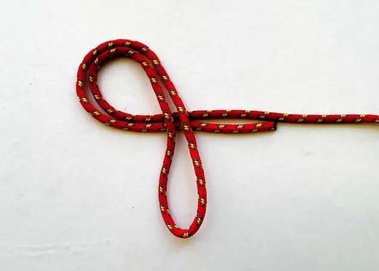
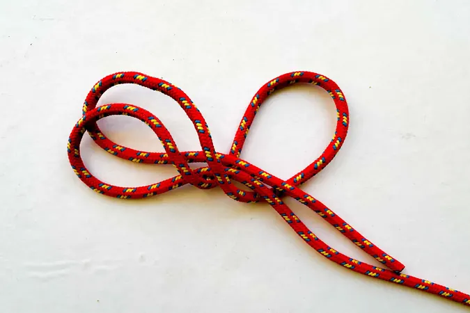
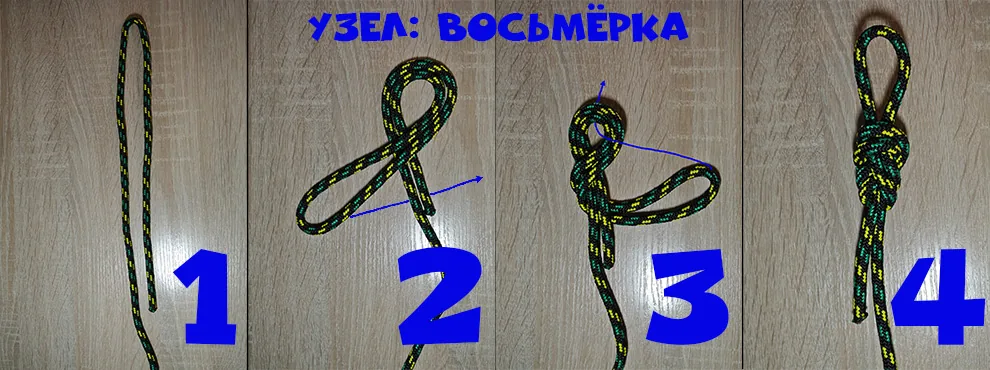
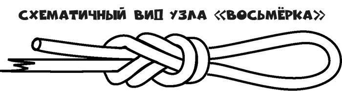

Восьмерка
Простой и надёжный узел. Используется как страховочный и стопорный, чтобы верёвка не выскальзывала из карабина или пряжки. Главный минус — затягивается под нагрузкой, поэтому после сильного рывка развязать его сложнее, чем булинь.
- Сложите верёвку вдвое и сформируйте петлю на рабочем конце.
- Оберните рабочий конец вокруг коренного конца верёвки.
- Проденьте рабочий конец в получившуюся петлю.
- Затяните узел, аккуратно подтягивая обе стороны.
Пошаговые фото





Фото шагов: Splav.ru
Альтернативная схема


Схема: Gamma Gamakov